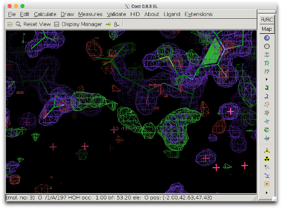
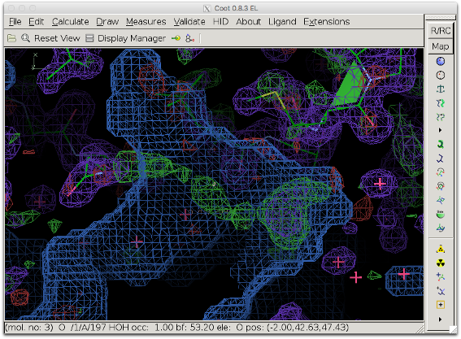
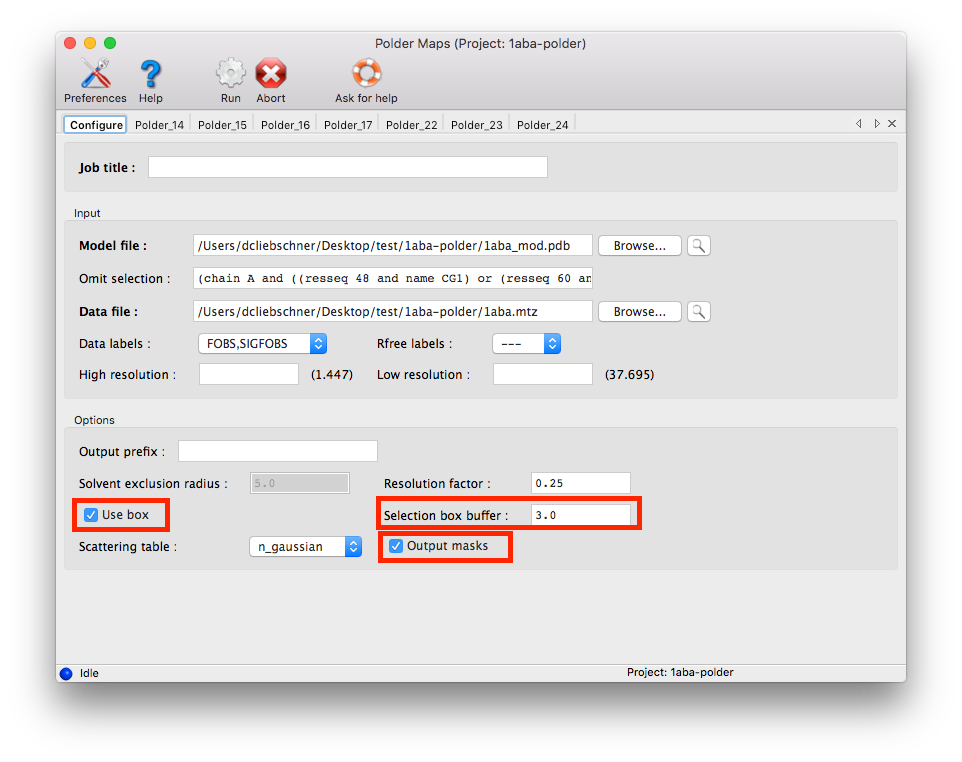
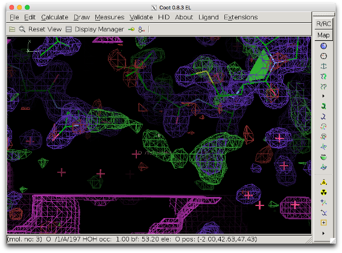
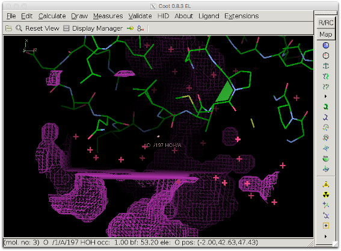
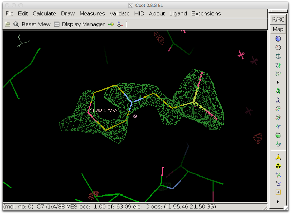
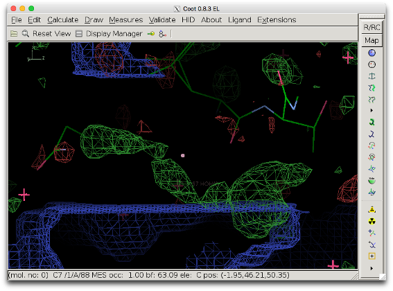
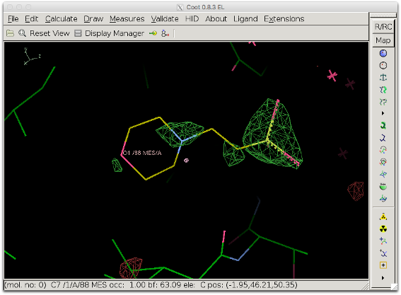

A polder OMIT map can help visualizing weak densities by exluding bulk solvent around the omitted region. This type of OMIT map is particularly useful for ligands. However, to calculate the polder map, it is necessary to have the ligand (or a placeholder) present in the model and there might be cases where it is useful to calculate a polder map when nothing has been placed yet. Strictly speaking, this type of map is thus not an OMIT map but a difference map, with the option to define a region where the bulk solvent mask is excluded. Such a map can be calculated with the use_box option of the polder tool.
The COOT screenshot below shows difference density in the outer region of a protein (model 1ABA, in which the solvent molecule MES A88 was deleted: 1aba_mod.pdb). The positive difference density (green) seems connected, but the shape is not very clear.

The next figure shows the bulk solvent mask (blue) covering the density peak. The bulk solvent density might hide additional features of the peak.

The compute_box option of the polder tool reassigns a local, user-defined, box-shaped portion of the bulk solvent mask. This way, interesting difference density peaks can be inspected without bias from the bulk solvent density (with the benefit of not having to disable the bulk solvent model for the entire structure)
1. Obtain the selection: Select several atoms around the peaks, approximately forming a rectangle containing the area of interest. These atoms will be used to define the region in which the bulk solvent mask will be excluded. The atoms will still contribute to structure factor calculations, so they will not be omitted. For example, the following atoms could be used (name - residue number - chain):
- CG1 48 A
- OE1 60 A
- CD2 7 A
- CB 64 A
2. "Translate" this selection to a selection string recognized by Phenix: (chain A and ((resseq 48 and name CG1) or (resseq 60 and name OE1) or (resseq 7 and name CD2) or (resseq 64 and name CB)))
3. Run phenix.polder:
Command line usage:
% phenix.polder 1aba_mod.pdb 1aba.mtz compute_box=true box_buffer=3 mask_output=True selection='(chain A and ((resseq 48 and name CG1) or (resseq 60 and name OE1) or (resseq 7 and name CD2) or (resseq 64 and name CB)))'
If the calculation is performed with the GUI, activate the follwing options:

5. Check the modified mask in COOT: Open the model file in coot. Click "File" --> "Open Map" --> and choose the file mask_polder.ccp4 (it might be necessary to increase the contour level to make the map appear). Center on the peak in question.

The bulk solvent mask (pink) does not cover the difference density peak anymore.

Another view showing the rectangular shape of the modified area.
6. Inspect the polder difference map: The difference density is clearer and a MES molecule fits it well.

The bulk solvent mask is excluded in the smallest reactangle which contains the selected atoms and which is parallel to unit cell axes. It can thus occur that the box excluding the mask does not cover the density peak in question. The figure below shows the bulk solvent mask when box_buffer=0. The mask (blue) still covers part of the density to be investigated (bottom right).

To prevent this, either the parameter box_buffer can be used or the selection can be changed. The latter is preferred because a large box buffer can be detrimental to the map (see next section for an example).
If the value for box_buffer is too high, large volumes of bulk solvent might not be accounted for, which can be detrimental to the detailed features of the difference map which we want to visualize. The figure below shows the resulting difference map when box_buffer = 12. The difference map is worse than the initial map.

Explanation: The unit cell for 1ABA is relatively small (30, 48, 61 in P212121) and using such a large value for box_buffer is almost equivalent to not using any bulk solvent at all and keeping the intermolecular volume empty. The value for box_buffer should therefore not exceed 5 A. Also, choosing carefully the selection defining the box can prevent the need for using the box_buffer parameter.